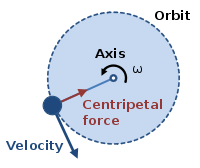
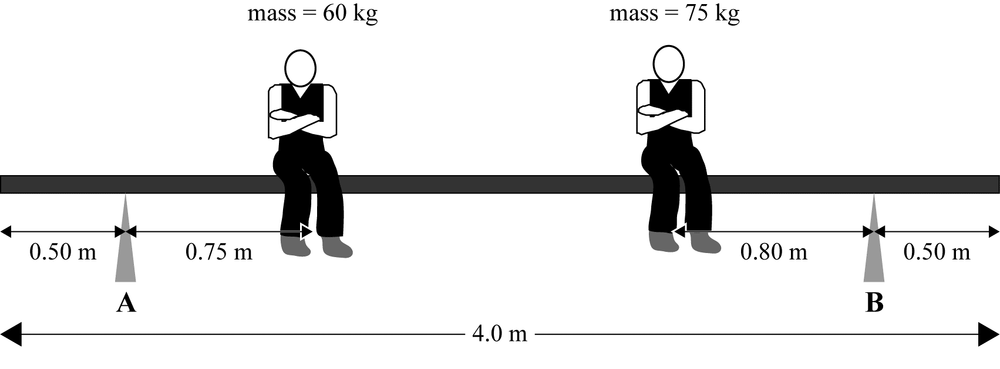

Circular Motion
12PHYS - Mechanics
Finn LeSueur
2019
Starter
Aaron is painting the outside of his house. He is standing on a 3.5m long plank with a support at each end. The plank weighs 4.8kg. He is standing 0.8m from the left side and he weighs 63kg.
- Draw a diagram to illustrate the situation
- Calculate the support force provided by Support A (left) and Support B (right).
Circular Motion
The motion of an object moving in a circular path.
e.g. Satellites in orbit, car driving around a corner, discus thrower, cricket bowler.
Circles
 \[\begin{equation}
Center \\
Radius = r \\
Diameter = d \\
Circumference = 2\pi r \\
Period = T \\
Frequency = f \\
Speed = v \\
\end{equation}\]
\[\begin{equation}
Center \\
Radius = r \\
Diameter = d \\
Circumference = 2\pi r \\
Period = T \\
Frequency = f \\
Speed = v \\
\end{equation}\]
\[\begin{equation}
v = \frac{2\pi r}{T}
\end{equation}\]
Question

If the radius is 2m, find:
- Circumference,
- period,
- frequency
- and speed
Question
Is speed constant?
Is velocity constant?
Centripetal Acceleration
An object undergoing circular motion is always changing its direction towards the center of the circle.
Therefore, beacuse the direction is changing, the velocity is changing. Therefore the object is always accelerating, even if its speed is constant.
Centripetal Acceleration
\[\begin{equation}
a_{c} = \frac{v^{2}}{r}
\end{equation}\]
\[\begin{equation}
v = \frac{2 \pi r}{T}
\end{equation}\]
Okay, but what causes the centripetal acceleration?
Newton’s Laws of Motion tell us that an acceleration is always caused by an unbalanced forced (net force).
Therefore, centripetal acceleration is caused by an unbalanced force which continuously pulls the object towards the center. Centripetal force.
Centripetal Force

\[\begin{equation}
F_{c} = \frac{mv^{2}}{r}
\end{equation}\]
Centripetal force acts inwards towards the center of the circle, while the velocity acts along a tangent to the circle at all times.
Starter

The plank weighs 22kg and is in equilibrium.
- Draw labelled arrows of appropriate size and position showing the forces acting upon the plank.
- Calculate the support force acting on the plank through Support A. Use \(g=10ms^{-2}\).
Note: The plank’s weight force acts through its center of mass, therefore the overhanging plank does not matter, other than to reduce the length of certain measurements.
Question
During a hammer throw, a 7kg steel ball is swung horizontally with a speed of \(10ms^{-1}\) in a circle of radius 2m.
Calculate the force required to keep the ball moving in a circle.
Answer
During a hammer throw, a 7kg steel ball is swung horizontallywith a speed of \(10ms^{-1}\) in a circule of radius 2m.
Calculate the force required to keep the ball moving in a circle.
\[\begin{equation}
F = \frac{mv^{2}}{r} \\
F = \frac{7 \times 10^{2}}{2} \\
F = \text{350N inwards}
\end{equation}\]